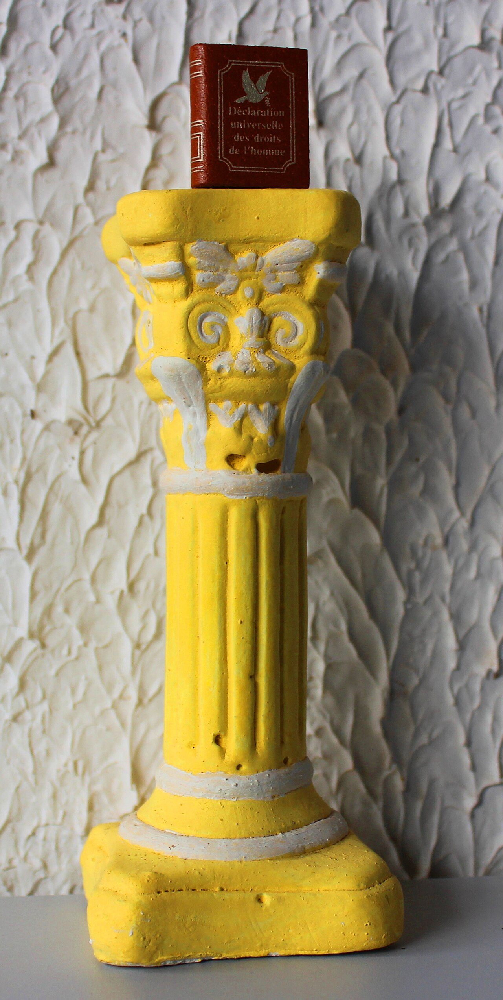

Trang bị kiến thức pháp lý nền tảng về quyền bất khả xâm phạm của con người, nhận diện 5 dấu hiệu cấu thành, 4 nhóm tội danh theo Bộ luật Hình sự 2015 (sửa đổi, bổ sung 2017) và nguyên nhân phát sinh.
Danh dự, nhân phẩm con người là một trong những quyền cơ bản của công dân, bất khả xâm phạm và luôn được pháp luật Việt Nam bảo vệ nghiêm ngặt qua 3 văn bản quy phạm pháp luật nền tảng:
Căn cứ vào các văn bản quy phạm pháp luật, đặc biệt là Bộ luật Hình sự 2015 số 100/2015/QH13 (sửa đổi, bổ sung năm 2017) của Quốc hội, các tội phạm xâm phạm danh dự, nhân phẩm được phân loại thành 4 nhóm:
Tội xâm phạm nhân phẩm, danh dự của con người là những hành vi nguy hiểm cho xã hội được quy định trong Bộ luật Hình sự, do người có năng lực trách nhiệm hình sự và đủ tuổi chịu trách nhiệm hình sự thực hiện một cách cố ý hoặc vô ý xâm phạm tới quyền được tôn trọng và bảo vệ về nhân phẩm và danh dự được Hiến pháp và pháp luật hình sự ghi nhận và bảo vệ.
Căn cứ theo quy định tại Điều 12 Bộ luật Hình sự năm 2015 (sửa đổi, bổ sung năm 2017), chủ thể của các tội phạm xâm phạm danh dự, nhân phẩm của người khác được xác định là những người đầy đủ năng lực hành vi dân sự, năng lực trách nhiệm hình sự và từ đủ 16 tuổi trở lên.
Nắm vững khái niệm tội xâm phạm danh dự, nhân phẩm; nhận diện các điều luật và công tác phòng, chống theo pháp luật hiện hành.
Nội dung đầy đủ theo tài liệu Bài 5:
Trang bị cho người học những kiến thức cơ bản về tội xâm phạm danh dự, nhân phẩm người khác; công tác phòng, chống tội phạm xâm phạm danh dự, nhân phẩm của người khác.
Hiểu rõ nghĩa vụ, trách nhiệm của người học; nhận diện sớm dấu hiệu hành vi xâm phạm để góp phần giữ gìn trật tự, an toàn xã hội.
Nội dung đầy đủ theo tài liệu Bài 5:
Hiểu rõ nghĩa vụ trách nhiệm của người học trong công tác phòng chống tội xâm phạm danh dự, nhân phẩm của người khác, là cơ sở giúp người học nhận diện những dấu hiệu, hành vi của xâm phạm danh dự, nhân phẩm của người khác góp phần giữ gìn trật tự, an toàn xã hội.
Phân biệt danh dự, nhân phẩm và quyền bất khả xâm phạm được pháp luật bảo hộ.
Điều 19, 20, 21 HP 2013 · Điều 34 BLDS 2015Mục 1.1: Khái niệm tội phạm xâm phạm danh dự, nhân phẩm của người khác
5 yếu tố bắt buộc: khách thể, chủ thể, đối tượng tác động, mặt chủ quan & khách quan.
Điều 12 BLHS 2015 (SĐ 2017)Mục 1.2: Dấu hiệu pháp lý của các tội xâm phạm danh dự, nhân phẩm của con người
Xâm phạm tình dục, mua bán người, làm nhục – vu khống và các tội phạm khác.
Điều 140 – Điều 156 BLHS 2015Mục 1.3: Phân loại các tội phạm xâm phạm danh dự, nhân phẩm (BLHS 2015 số 100/2015/QH13, SĐ 2017)
Tác động từ mặt trái kinh tế thị trường, tàn dư văn hóa cũ và bất cập quản lý.
Mục 1.4 · Gốc rễ & Định hướng phòng ngừaMục 1.4: Nguyên nhân, điều kiện của tình trạng phạm tội danh dự, nhân phẩm
Góc độ dư luận xã hội
Định nghĩa đầy đủ trong tài liệu:
Danh dự là sự coi trọng, đánh giá cao của dư luận xã hội đối với một người dựa trên các giá trị tinh thần, đạo đức của người đó.
Danh dự, nhân phẩm của con người là những yếu tố về tinh thần, bao gồm phẩm chất, giá trị, sự tôn trọng, tình cảm yêu mến của những người xung quanh đối với người đó.
Như vậy, danh dự gắn chặt với sự đánh giá, nhìn nhận và uy tín của cá nhân trong mối quan hệ với cộng đồng xã hội xung quanh.
Góc độ phẩm chất cá nhân
Định nghĩa đầy đủ trong tài liệu:
Nhân phẩm là phẩm chất, giá trị riêng của một con người cụ thể, mang tính chất đặc trưng cá nhân trong xã hội.
Danh dự, nhân phẩm của con người là những yếu tố về tinh thần, bao gồm phẩm chất, giá trị, sự tôn trọng, tình cảm yêu mến của những người xung quanh đối với người đó.
Nhân phẩm gắn với giá trị tự thân và lòng tự trọng bên trong của mỗi con người, là quyền cơ bản bất khả xâm phạm được pháp luật bảo vệ.
Sử dụng lời nói hoặc hành động tác động đến đạo đức, uy tín, phẩm giá → gây tổn thương tinh thần, lòng tự trọng và tâm lý nạn nhân.
Nội dung đầy đủ theo tài liệu Bài 5:
Hành vi xâm phạm danh dự, nhân phẩm của con người là hành vi sử dụng lời nói hoặc hành động tác động đến những giá trị đạo đức, uy tín, phẩm giá của một người, gây tổn thương cho người bị tác động.
Hành vi xâm phạm danh dự, nhân phẩm không chỉ làm tổn thương đến những giá trị về tinh thần, lòng tự trọng của người bị xúc phạm, ảnh hưởng đến cách nhìn nhận của những người xung quanh đến người bị xúc phạm mà còn tác động trực tiếp đến tâm lý của người bị xúc phạm tùy theo tính chất và mức độ bị xâm phạm.
Là hành vi nguy hiểm cho xã hội quy định trong Bộ luật Hình sự, do người đủ năng lực và độ tuổi TNHS thực hiện (cố ý hoặc vô ý).
Định nghĩa đầy đủ theo tài liệu Bài 5:
Tội xâm phạm nhân phẩm, danh dự của con người là những hành vi nguy hiểm cho xã hội được quy định trong Bộ Luật hình sự, do người có năng lực trách nhiệm hình sự và đủ tuổi chịu trách nhiệm hình sự thực hiện một cách cố ý hoặc vô ý xâm phạm tới quyền được tôn trọng và bảo vệ về nhân phẩm và danh dự được Hiến pháp và pháp luật hình sự ghi nhận và bảo vệ.
Văn bản tối cao
Bảo hộ thân thể, sức khỏe, danh dự, nhân phẩm; nghiêm cấm tra tấn, bạo lực, truy bức, nhục hình dưới mọi hình thức.
Danh dự, nhân phẩm con người là một trong những quyền cơ bản của công dân, bất khả xâm phạm và luôn được pháp luật bảo vệ, cụ thể tại Điều 19, Điều 20, Điều 21 Hiến pháp năm 2013.
“Mọi người có quyền bất khả xâm phạm về thân thể, được pháp luật bảo hộ về sức khỏe, danh dự và nhân phẩm; không bị tra tấn, bạo lực, truy bức, nhục hình hay bất kỳ hình thức đối xử nào khác xâm phạm thân thể, sức khoẻ, xúc phạm danh dự, nhân phẩm. Không ai hoặc cơ quan, tổ chức nào có quyền xâm phạm đến danh dự nhân phẩm của người khác, những hành vi xâm phạm đến danh dự nhân phẩm của người khác đều bị pháp luật trừng trị.”
Quyền nhân thân
Khẳng định danh dự, nhân phẩm, uy tín của cá nhân là bất khả xâm phạm và luôn được pháp luật bảo vệ.
Tiếp nối tinh thần của Hiến pháp năm 2013, Điều 34 Bộ luật Dân sự năm 2015 tiếp tục khẳng định:
“Danh dự, nhân phẩm, uy tín của cá nhân là bất khả xâm phạm và được pháp luật bảo vệ.”
Đây là nền tảng pháp lý dân sự bảo vệ quyền nhân thân của mọi cá nhân trước các hành vi xâm phạm uy tín, danh dự, nhân phẩm trong đời sống xã hội và trên không gian mạng.
Chế tài hình sự
Truy cứu trách nhiệm hình sự đối với mọi hành vi nguy hiểm cho xã hội xâm hại danh dự, nhân phẩm con người.
Căn cứ vào các văn bản quy phạm pháp luật, đặc biệt là Bộ luật Hình sự 2015 số 100/2015/QH13 (sửa đổi, bổ sung năm 2017) của Quốc hội nước ta:
“Mọi người có quyền bất khả xâm phạm về thân thể, được pháp luật bảo hộ về sức khỏe, danh dự và nhân phẩm; không bị tra tấn, bạo lực, truy bức, nhục hình... Không ai hoặc cơ quan, tổ chức nào có quyền xâm phạm đến danh dự nhân phẩm của người khác, những hành vi xâm phạm đều bị pháp luật trừng trị.”— Trích tinh thần Hiến pháp nước CHXHCN Việt Nam năm 2013
“Mọi người có quyền bất khả xâm phạm về thân thể, được pháp luật bảo hộ về sức khỏe, danh dự và nhân phẩm; không bị tra tấn, bạo lực, truy bức, nhục hình hay bất kỳ hình thức đối xử nào khác xâm phạm thân thể, sức khoẻ, xúc phạm danh dự, nhân phẩm. Không ai hoặc cơ quan, tổ chức nào có quyền xâm phạm đến danh dự nhân phẩm của người khác, những hành vi xâm phạm đến danh dự nhân phẩm của người khác đều bị pháp luật trừng trị”
Quy định này xác lập nguyên tắc tối thượng: không một cá nhân, cơ quan hay tổ chức nào được phép xâm phạm danh dự, nhân phẩm của công dân; mọi hành vi vi phạm đều phải chịu sự trừng trị của pháp luật.
Xâm phạm trực tiếp tới quyền được bảo vệ về tính mạng, sức khỏe, danh dự và nhân phẩm của người khác.
Quyền bị xâm hạiNội dung đầy đủ theo tài liệu Bài 5:
Khách thể: Hành vi đã xâm phạm đến quyền được bảo vệ về tính mạng, sức khỏe, danh dự nhân phẩm của người khác.
Đây là quan hệ xã hội được pháp luật hình sự bảo vệ nhưng bị tội phạm xâm hại trực tiếp, làm tổn thương quyền con người và quyền công dân đã được Hiến pháp ghi nhận.
Người có đầy đủ năng lực hành vi dân sự, năng lực trách nhiệm hình sự và từ đủ 16 tuổi trở lên.
Điều 12 BLHS 2015Nội dung đầy đủ theo tài liệu Bài 5:
Chủ thể: Căn cứ theo quy định tại Điều 12 Bộ luật Hình sự năm 2015, sửa đổi, bổ sung năm 2017, tội phạm xâm phạm danh dự, nhân phẩm của người khác được xác định là những người đầy đủ năng lực hành vi dân sự, năng lực trách nhiệm hình sự và từ đủ 16 tuổi trở lên.
Phải là con người cụ thể; giúp phân biệt với tội phạm có hành vi tương tự nhưng tác động đối tượng khác.
Cá nhân xác địnhNội dung đầy đủ theo tài liệu Bài 5:
Đối tượng tác động: Con người cụ thể.
Điều này để nhằm phân biệt các tội xâm phạm danh dự, nhân phẩm của con người với một số tội phạm cũng có những hành vi phạm tội tương tự nhưng tác động tới đối tượng không phải là con người.
Người phạm tội thực hiện hành vi với lỗi cố ý trực tiếp — nhận thức rõ tính chất nguy hiểm và mong muốn hậu quả xúc phạm xảy ra.
Lỗi cố ý trực tiếpNội dung đầy đủ theo tài liệu Bài 5:
Mặt chủ quan: Lỗi cố ý trực tiếp.
Người thực hiện hành vi nhận thức rõ lời nói hoặc hành động của mình là nguy hiểm cho xã hội, xâm phạm nghiêm trọng đến nhân phẩm, danh dự của người khác, thấy trước hậu quả và mong muốn hậu quả đó xảy ra.
Thể hiện qua hành vi cụ thể bằng lời nói hoặc hành động xúc phạm nghiêm trọng đến nhân phẩm, danh dự của nạn nhân.
Hành vi xúc phạm nghiêm trọngNội dung đầy đủ theo tài liệu Bài 5:
Mặt khách quan: Người phạm tội phải là người có hành vi bằng lời nói hoặc hành động xúc phạm nghiêm trọng nhân phẩm, danh dự của người khác.
Mức độ “xúc phạm nghiêm trọng” thể hiện ở việc gây tổn thương sâu sắc tới lòng tự trọng, uy tín, phẩm giá hoặc sức khỏe, tâm lý của người bị tác động.
Nhóm 1 · Tình dục
Điều 141 – Điều 147
a. Các tội xâm phạm tình dục: Là những hành vi xâm phạm đến quyền được tôn trọng về danh dự, nhân phẩm của người khác, làm ảnh hưởng đến sự phát triển bình thường cả về thể chất và tinh thần của họ.
Gồm: Tội hiếp dâm (Đ.141); Hiếp dâm người dưới 16 tuổi (Đ.142); Cưỡng dâm (Đ.143); Cưỡng dâm người từ đủ 13 tuổi đến dưới 16 tuổi (Đ.144); Giao cấu hoặc thực hiện hành vi quan hệ tình dục khác với người từ đủ 13 tuổi đến dưới 16 tuổi (Đ.145); Dâm ô đối với người dưới 16 tuổi (Đ.146); Sử dụng người dưới 16 tuổi vào mục đích khiêu dâm (Đ.147).
Nhóm 2 · Mua bán
Điều 150 – Điều 154
b. Các tội mua bán người (xâm phạm sức khỏe): Là tội phạm được thực hiện với lỗi cố ý trực tiếp, trong đó người thực hiện hành vi phạm tội xâm phạm đến các quyền cơ bản của nạn nhân như quyền tự do, quyền con người..., coi con người như một món hàng để thực hiện việc trao đổi, mua bán với mục đích kiếm lợi nhuận.
Gồm: Mua bán người (Đ.150); Mua bán người dưới 16 tuổi (Đ.151); Đánh tráo người dưới 01 tuổi (Đ.152); Chiếm đoạt người dưới 16 tuổi (Đ.153); Mua bán, chiếm đoạt mô hoặc bộ phận cơ thể người (Đ.154).
Nhóm 3 · Làm nhục
Điều 140, 155, 156
c. Các tội làm nhục người khác: Đây là hành vi phạm tội hành hạ người khác xâm phạm đến quyền được bảo hộ về thân thể, sức khỏe, uy tín, danh dự, nhân phẩm của người khác.
Quy định tại: Điều 140 (Tội hành hạ người khác); Điều 155 (Tội làm nhục người khác); và Điều 156 (Tội vu khống).
Nhóm 4 · Tội khác
Đ.148, 149 & THCV
d. Nhóm tội khác: Một số tội khác về xâm phạm danh dự, nhân phẩm người khác được pháp luật quy định gồm: tội lây truyền HIV cho người khác (Điều 148), tội cố ý truyền HIV cho người khác (Điều 149 Bộ luật Hình sự 2015), và tội chống người thi hành công vụ.
Đây là những hành vi làm tổn thương nghiêm trọng đến cả sức khỏe (nhiễm HIV, suy giảm miễn dịch, tử vong do bệnh cơ hội) lẫn tinh thần của nạn nhân (mặc cảm, lo sợ kỳ thị, khó chứng minh bản thân là nạn nhân).
Căn cứ vào các văn bản quy phạm pháp luật, đặc biệt là Bộ luật Hình sự 2015 số 100/2015/QH13 (sửa đổi, bổ sung năm 2017) của Quốc hội nước ta, các tội phạm xâm phạm danh dự, nhân phẩm được hệ thống hóa thành 4 nhóm chính nêu trên nhằm bảo vệ toàn diện thân thể, sức khỏe, quyền tự do và nhân phẩm công dân.
Trong hai nhóm tội đầu tiên, pháp luật hình sự Việt Nam dành sự bảo hộ đặc biệt cho trẻ em và người chưa thành niên:
Ảnh hưởng nặng nề tới danh dự, nhân phẩm và sự phát triển bình thường về thể chất & tinh thần.
Nội dung đầy đủ theo tài liệu Bài 5:
Tội xâm phạm tình dục là những hành vi xâm phạm đến quyền được tôn trọng về danh dự, nhân phẩm của người khác, làm ảnh hưởng đến sự phát triển bình thường cả về thể chất và tinh thần của họ.
Nhóm tội xâm phạm tình dục được quy định trong Bộ Luật hình sự năm 2015 (sửa đổi, bổ sung năm 2017) gồm các tội:
Lỗi cố ý trực tiếp; coi con người như món hàng trao đổi kiếm lợi nhuận, tước đoạt quyền tự do & quyền con người.
Nội dung đầy đủ theo tài liệu Bài 5:
Là tội phạm được thực hiện với lỗi cố ý trực tiếp trong đó người thực hiện hành vi phạm tội xâm phạm đến các quyền cơ bản của nạn nhân như quyền tự do, quyền con người..., coi con người như một món hàng để thực hiện việc trao đổi, mua bán với mục đích là kiếm lợi nhuận.
Tội mua bán người được quy định gồm:

2 Quyền con người (UDHR)Hành hạ, xúc phạm nghiêm trọng quyền bảo hộ về thân thể, sức khỏe, uy tín, danh dự, nhân phẩm.
Nội dung đầy đủ theo tài liệu Bài 5:
Đây là hành vi phạm tội hành hạ người khác xâm phạm đến quyền được bảo hộ về thân thể, sức khỏe, uy tín, danh dự, nhân phẩm của người khác.
Gây tổn thương nặng nề đồng thời cho sức khỏe thể chất và tâm lý xã hội của nạn nhân.
Nội dung đầy đủ theo tài liệu Bài 5:
Một số tội khác về xâm phạm danh dự, nhân phẩm người khác được pháp luật quy định:
Đây là những hành vi phạm tội làm tổn thương đến sức khỏe và tinh thần của nạn nhân.
Nội dung đầy đủ theo tài liệu Bài 5:
Đây là những hành vi phạm tội làm tổn thương đến sức khỏe và tinh thần của nạn nhân.
Nội dung đầy đủ theo tài liệu Bài 5:
Nền kinh tế thị trường, bên cạnh những mặt ưu điểm cũng bộc lộ nhiều mặt trái trở thành những nguyên nhân làm phát sinh tội phạm như:
Nội dung đầy đủ theo tài liệu Bài 5:
Những tàn dư của chế độ cũ về mặt tư tưởng cùng với hệ quả chiến tranh kéo dài trong nhiều năm có tác động lớn đến các hiện tượng tiêu cực của xã hội, trong đó có tình trạng tội phạm xâm phạm danh dự nhân phẩm con người.
Nội dung đầy đủ theo tài liệu Bài 5:
Mỗi sinh viên là một mắt xích quan trọng trong phong trào toàn dân bảo vệ an ninh Tổ quốc, góp phần xây dựng môi trường học đường và xã hội an toàn, văn minh.
Phân biệt rõ dấu hiệu xâm phạm danh dự, nhân phẩm ngoài đời thực và trên không gian mạng theo BLHS 2015.
Cơ sở nhận diện theo Mục tiêu Bài 5:
Người học nắm vững khái niệm và 5 dấu hiệu pháp lý cấu thành tội phạm (khách thể, chủ thể từ đủ 16 tuổi theo Điều 12 BLHS 2015, đối tượng là con người cụ thể, lỗi cố ý trực tiếp, hành vi xúc phạm nghiêm trọng bằng lời nói hoặc hành động).
Qua đó nhận diện kịp thời các hành vi thuộc 4 nhóm tội danh: xâm phạm tình dục (Đ.141–147), mua bán người (Đ.150–154), làm nhục/vu khống/hành hạ (Đ.140, 155, 156) và lây truyền/cố ý truyền HIV (Đ.148, 149).
Rèn luyện đạo đức, tiếp thu văn hóa có chọn lọc; nói không với vu khống, sỉ nhục hay kỳ thị người yếu thế.
Khắc phục nguyên nhân chủ quan từ nhận thức & lối sống:
Tự bảo vệ bản thân, hỗ trợ nạn nhân và tích cực tham gia phong trào quần chúng giữ gìn trật tự an toàn xã hội.
Nghĩa vụ và trách nhiệm của người học trong công tác phòng, chống tội phạm: